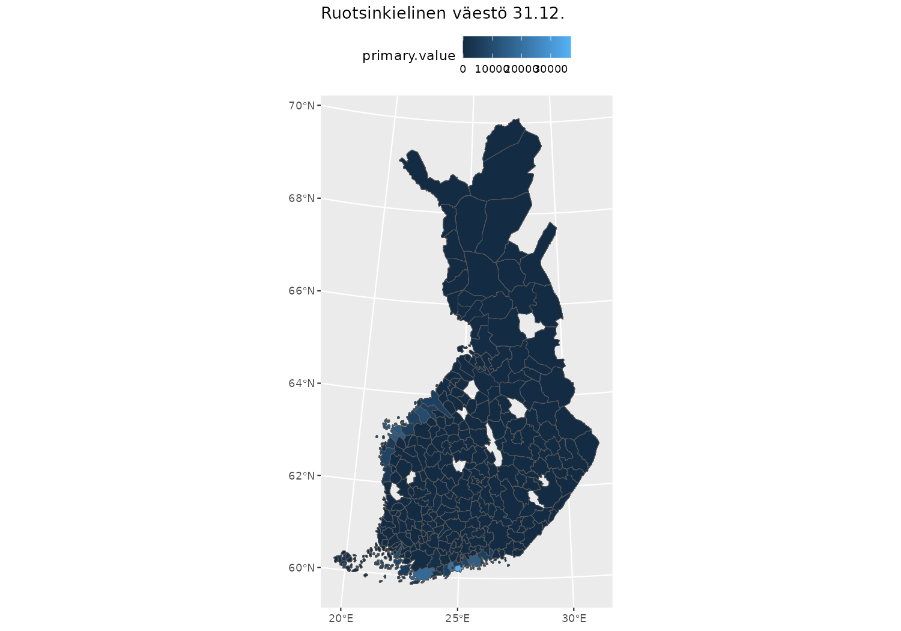

Joining attribute data with geofi data
Markus Kainu
2023-10-31
Source:vignettes/geofi_joining_attribute_data.Rmd
geofi_joining_attribute_data.RmdThis vignettes provides few examples on how to join attribute data from common sources of attribute data. Here we are using data from THL Sotkanet and Paavo (Open data by postal code area).
Installation
geofi can be installed from CRAN using
# install from CRAN
install.packages("geofi")
# Install development version from GitHub
remotes::install_github("ropengov/geofi")
# Let's first create a function that checks if the suggested
# packages are available
check_namespaces <- function(pkgs){
return(all(unlist(sapply(pkgs, requireNamespace,quietly = TRUE))))
}Municipalities
Municipality data provided by
get_municipalities()-function contains 77 indicators
variables from each of 309 municipalities. Variables can be used either
for aggregating data or as keys for joining attribute data.
Population data from Sotkanet
In this first example we join municipality level indicators of Swedish-speaking population at year end from Sotkanet population data,
library(geofi)
muni <- get_municipalities(year = 2023)
libs <- c("sotkanet","dplyr","tidyr","janitor","ggplot2")
if (check_namespaces(pkgs = libs)) {
library(sotkanet)
library(dplyr)
sotkadata_swedish_speaking_pop <- GetDataSotkanet(indicators = 2433, years = 2000:2022) %>%
filter(region.category == "KUNTA") %>%
mutate(municipality_code = as.integer(region.code))
} else {
message("One or more of the following packages is not available: ",
paste(libs, collapse = ", "))
}This is not obvious to all, but have the municipality names in
Finnish among other regional breakdowns which allows us to combine the
data with spatial data using
municipality_name_fi-variable.
if (check_namespaces(pkgs = libs)) {
map_data <- right_join(muni,
sotkadata_swedish_speaking_pop,
by = c("municipality_code" = "municipality_code"))
} else {
message("One or more of the following packages is not available: ",
paste(libs, collapse = ", "))
}Now we can plot a map showing
Share of Swedish-speakers of the population, % and
Share of foreign citizens of the population, % on two
panels sharing a scale.
if (check_namespaces(pkgs = libs)) {
library(ggplot2)
map_data %>%
ggplot(aes(fill = primary.value)) +
geom_sf() +
labs(title = unique(sotkadata_swedish_speaking_pop$indicator.title.fi)) +
theme(legend.position = "top")
} else {
message("One or more of the following packages is not available: ",
paste(libs, collapse = ", "))
}
Zipcode level
You can download data from Paavo
(Open data by postal code area) using pxweb-package in
a similar manner as in the first example.
libs <- c("ggplot2","pxweb","janitor")
if (check_namespaces(pkgs = libs)) {
library(pxweb)
# lets get all zipcodes and all variables
pxweb_query_list <-
list("Postinumeroalue"=c("*"),
"Tiedot"=c("he_vakiy"),
"Vuosi"=c("2021"))
px_raw <-
pxweb_get(url = "https://statfin.stat.fi/PXWeb/api/v1/en/Postinumeroalueittainen_avoin_tieto/uusin/paavo_pxt_12ey.px",
query = pxweb_query_list)
px_data <- as_tibble(
as.data.frame(px_raw,
column.name.type = "text",
variable.value.type = "text")
) %>% setNames(janitor::make_clean_names(names(.)))
px_data %>%
filter(postal_code_area != "Finland")
} else {
message("One or more of the following packages is not available: ",
paste(libs, collapse = ", "))
}
#> # A tibble: 3,027 × 3
#> postal_code_area year inhabitants_total_he
#> <chr> <chr> <dbl>
#> 1 WHOLE COUNTRY 2021 5548241
#> 2 00100 Helsinki keskusta - Etu-Töölö (Helsinki) 2021 17893
#> 3 00120 Punavuori - Bulevardi (Helsinki) 2021 7230
#> 4 00130 Kaartinkaupunki (Helsinki) 2021 1716
#> 5 00140 Kaivopuisto - Ullanlinna (Helsinki) 2021 7845
#> 6 00150 Punavuori - Eira - Hernesaari (Helsinki) 2021 9368
#> 7 00160 Katajanokka (Helsinki) 2021 4932
#> 8 00170 Kruununhaka (Helsinki) 2021 7191
#> 9 00180 Kamppi - Ruoholahti (Helsinki) 2021 14440
#> 10 00190 Suomenlinna (Helsinki) 2021 694
#> # ℹ 3,017 more rowsBefore we can join the data, we must extract the numerical postal
code from postal_code_area-variable.
libs <- c("ggplot2","pxweb","janitor")
if (check_namespaces(pkgs = libs)) {
px_data$posti_alue <- sub(" .+$", "", px_data$postal_code_area)
# Lets join with spatial data and plot the area of each zipcode
zipcodes19 <- get_zipcodes(year = 2019)
zipcodes_map <- left_join(zipcodes19,
px_data)
ggplot(zipcodes_map) +
geom_sf(aes(fill = inhabitants_total_he),
color = alpha("white", 1/3)) +
labs(title = "Total number of inhabitants, 2021",
fill = NULL)
} else {
message("One or more of the following packages is not available: ",
paste(libs, collapse = ", "))
}